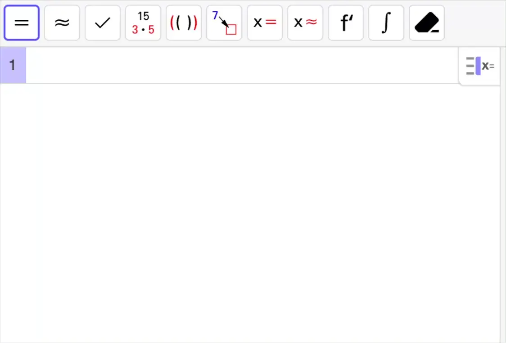

Oppgaver: Sinus, cosinus og tangens#
Oppgave 1
I figuren til høyre vises en trekant \(\triangle ABC\).
Bestem \(\sin B\) og \(\cos B\).
Fasit
Bestem \(\tan B\).
Fasit
Bestem \(\sin C\) og \(\cos C\).
Fasit
Bestem \(\tan C\).
Fasit
Oppgave 2
I figuren til høyre vises en trekant \(\triangle ABC\).
Bestem \(BC\).
Fasit
Bestem \(\sin A\) og \(\cos A\).
Fasit
Bestem \(\tan A\).
Fasit
Bestem \(\sin C\) og \(\cos C\).
Fasit
Bestem \(\tan C\).
Fasit
Oppgave 3
Hvordan regne ut sinus og cosinus med CAS
I gif-en nedenfor viser vi hvordan man bruker CAS til å bestemme \(\sin v\), \(\cos v\) og \(\tan v\) for en vinkel \(v = 30\degree\) i en rettvinklet trekant. For å få gradertegn \(\degree\) må du:
Trykke på “option + o” på tastaturet på macOS.
Trykke på “Alt + o” på tasteturet på Windows.
{kind=link}

En trekant \(\triangle ABC\) er vist til høyre.
Regn ut \(\sin A\) og \(\cos A\) med CAS.
Fasit
Bruk trigonometri til å bestemme \(AC\).
Fasit
Bruk trigonometri til å bestemme \(BC\).
Fasit
Oppgave 4
Bruk CAS til å regne ut \(\sin 45^\circ\), \(\cos 45^\circ\) og \(\tan 45^\circ\).
Fasit

Altså er
Bruk CAS til å regne ut \(\sin 60^\circ\), \(\cos 60^\circ\) og \(\tan 60^\circ\).
Fasit

Altså er
Oppgave 5
I denne oppgaven skal du bruke trigonometri og CAS til å bestemme ukjente sidelenger i rettvinklede trekanter.
I figuren nedenfor vises en rettvinklet trekant.
Bruk CAS til å bestemme \(x\).

Fasit

Dermed er \(x = 10\).
I figuren nedenfor vises en rettvinklet trekant.
Bruk CAS til å bestemme \(x\).

Fasit

Dermed er \(x = 2\).
I figuren nedenfor vises en rettvinklet trekant.
Bruk CAS til å bestemme \(x\).

Fasit

Dermed er \(x = 4\sqrt{2}\).
I figuren nedenfor vises en rettvinklet trekant.
Bruk CAS til å bestemme \(x\).

Fasit

Altså er \(x = 4\).
I figuren nedenfor vises en rettvinklet trekant.
Bruk CAS til å bestemme \(x\).

Fasit

Altså er \(x = 1.25\).
I figuren nedenfor vises en rettvinklet trekant.
Bruk CAS til å bestemme \(x\).

Fasit

Altså er \(x = 3.22\).
Oppgave 6
I denne oppgaven skal du lære å utlede eksakte verdier for sinus og cosinus når vinklene er \(30^\circ\) og \(60^\circ\). Disse verdiene er viktige å huske utenat, men det er enklere å huske dem dersom du vet hvor de kommer fra.
En likesidet trekant \(\triangle ABC\) er vist i figuren til høyre.
Bestem høyden \(h\) i trekanten.
Fasit
Bruk trekanten til å bestemme en eksakt verdi for \(\sin 60^\circ\) og \(\cos 60^\circ\).
Fasit
Bruk trekanten til å bestemme en eksakt verdi for \(\sin 30^\circ\) og \(\cos 30^\circ\).
Fasit
Vis at
for \(v = 30^\circ\) og \(v = 60^\circ\).
Oppgave 7
I denne oppgaven skal du lære hvordan man kommer fram til sinus og cosinus når vinkelen er \(45^\circ\). Det er også viktig å kunne disse verdiene utenat. Igjen – det er enklest å huske dersom man vet hvordan man kommer fram til dem.
Bestem sidelengdene \(AB\) og \(BC\).
Fasit
Bruk trigonometri til å bestemme de eksakte verdiene for \(\sin 45\degree\) og \(\cos 45\degree\).
Fasit
Oppgave 8
I en matematikkbok står det følgende:
Setning
For en vinkel \(v\), gjelder
Vis at formelen stemmer for trekanten nedenfor med \(v = 30^\circ\).

Oppgave 9
Snells lov forteller oss at når lys går fra luft til vann, vil lyset brytes slik at lysstrålen sin retning i luft og vann oppfyller

Hvor stor vinkel \(u\) må lyset ha for at vinkelen etter brytning i vannet skal være \(v = 30^\circ\)?
Fasit

\(u \approx 41.68 \degree\).
Hva blir retningen til lysstrålen i vannet når \(u\) nærmer seg \(0^\circ\). Gi en praktisk tolkning av svaret.
Fasit
Når \(u \approx 0^\circ\), vil \(\sin u \approx 0\) og dermed \(\sin v \approx 0\). Dermed vil lysstrålen gå parallelt med innfallsloddet og vannstrålen endrer ikke retning når den går gjennom vannoverflaten. Det skjer altså ingen brytning.
Oppgave 10
En lysstråle har beveget seg fra et punkt \(A(0, 1)\) i luft til et punkt \(B(10, -1)\) i vann. Lyset traff vannoverflaten i et punkt \(M(x, 0)\). Alle avstander er i kilometer.
I figuren nedenfor vises en mulig bane for lysstrålen.

Lag en modell \(L_\text{luft}\) som beskriver hvor mange kilometer \(L_\text{luft}(x)\) lysstrålen har beveget seg i luft før den traff vannoverflaten i punktet \(M(x, 0)\).
Fasit
Lag en modell \(L_\text{vann}\) som beskriver hvor mange kilometer \(L_\text{vann}(x)\) lysstrålen har beveget seg i vann etter at den traff vannoverflaten i punktet \(M(x, 0)\) og endte opp i \(B(10, -1)\).
Fasit
Lys beveger seg med en fart på ca. 300 000 km/s i luft og ca. 225 000 km/s i vann.
Lag en modell \(T\) som beskriver hvor mange sekunder \(T(x)\) det tar for lysstrålen å bevege seg fra \(A\) til \(B\) via punktet \(M(x, 0)\).
Hint: Vei-fart-tid
For en strekning \(L\), en fart \(v\) og en tid \(t\), gjelder
Fasit
Bestem i hvilket punkt \(M(x, 0)\) lysstrålen må ha truffet dersom lysstrålen skal bruke kortest mulig tid mellom \(A\) og \(B\).
Fasit

Altså gikk vannstrålen gjennom \(M(8.88, 0)\) hvis den skulle bruke kortest mulig tid fra \(A\) til \(B\).
Bruk svaret ditt fra d til å vise at
Fasit

Oppgave 11
Månen har en radius på ca. 1737 km og er ca. 384 400 km unna jorden.
Bestem hvor stor vinkel \(v\) månen dekker på himmelen sett fra jorden.
Fasit
Andromedagalaksen er vår nærmeste nabogalakse. Den er er ca. 200 000 lysår i diameter og 2.5 millioner lysår unna oss.
Bestem hvor stor vinkel \(v\) Andromeda dekker på himmelen sett fra jorden.
Dekker månen eller Andromedagalaksen størst vinkel på himmelen?
Fasit
Oppgave 12
Nedenfor vises en rettvinklet trekant med vinkler \(u\) og \(v\).

Avgjør om påstandene nedenfor stemmer eller ikke.
For en rettvinklet trekant, gjelder alltid
Fasit
Påstanden stemmer.
For en rettvinklet trekant, gjelder alltid
Fasit
Påstanden stemmer.
For en rettvinklet trekant, gjelder alltid
Fasit
Påstanden stemmer.